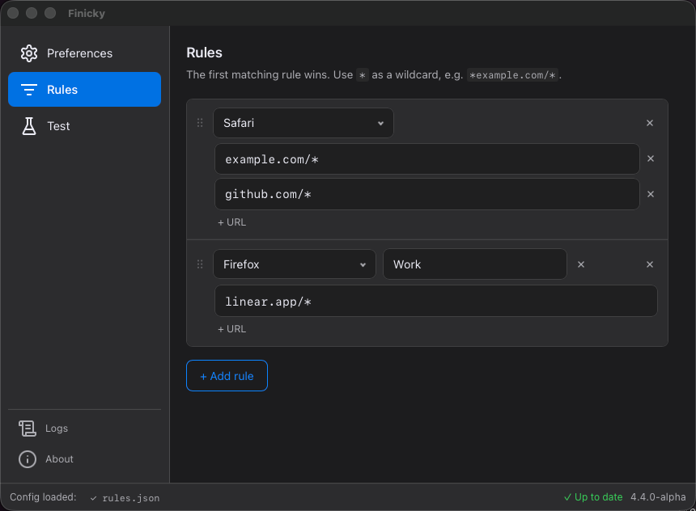
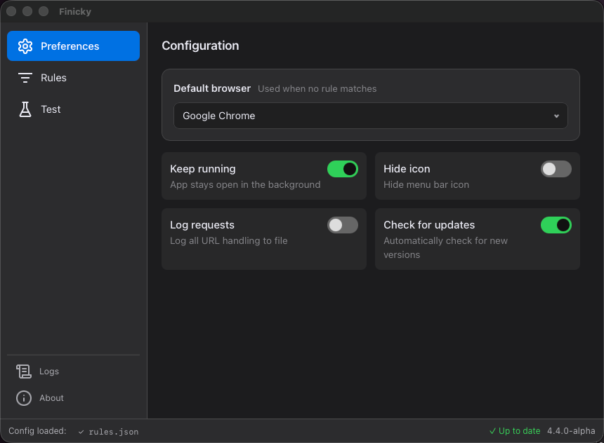

Choose which browser opens every link.
A free macOS app that sends URLs to the right browser based on rules you set up - by pattern, by app, or whatever you need.
Free & open source · macOS 12+
Add URL routing rules directly in the app.
RecommendedMatch URLs with wildcards and send them to the right browser. Works for http, https, and custom schemes.
Write a ~/.finicky.js or ~/.finicky.ts for full programmatic control - match functions, conditions, rewrites, and whatever else you can think of.
Open links differently depending on which app they came from.
Target a specific Firefox or Chrome profile, not just a browser. E.g. keep work and personal browser separate.
Paste a URL into the app and see which rule matches.
Download and move it to your Applications folder.
Finicky will ask. Click "Use Finicky" and it handles everything from there.
Open the app and set up which URLs go to which browser.


Drop a ~/.finicky.js or ~/.finicky.ts in your home directory for programmatic routing - match functions, which app triggered the link, window title, and more.
~/.finicky.js
export default { defaultBrowser: "Safari", rewrite: [ { // Redirect x.com to xcancel.com match: "x.com/*", url: ({ url }) => ({ ...url, host: "xcancel.com" }), }, { // Strip tracking parameters from all URLs match: () => true, url: ({ url }) => { [...url.search.keys()].filter(p => p.startsWith("utm_")).forEach(p => url.search.delete(p)); return url; }, }, ], handlers: [ { // Open work links in Chrome match: ["*.work.example.com*", "*jira*"], browser: "Google Chrome", }, { // Route by window title - e.g. which Slack workspace match: ({ opener }) => opener?.windowTitle?.includes("Work"), browser: "Google Chrome", }, { // Open with a specific Firefox profile match: "*.mozilla.org*", browser: { name: "Firefox", profile: "work" }, }, ],};